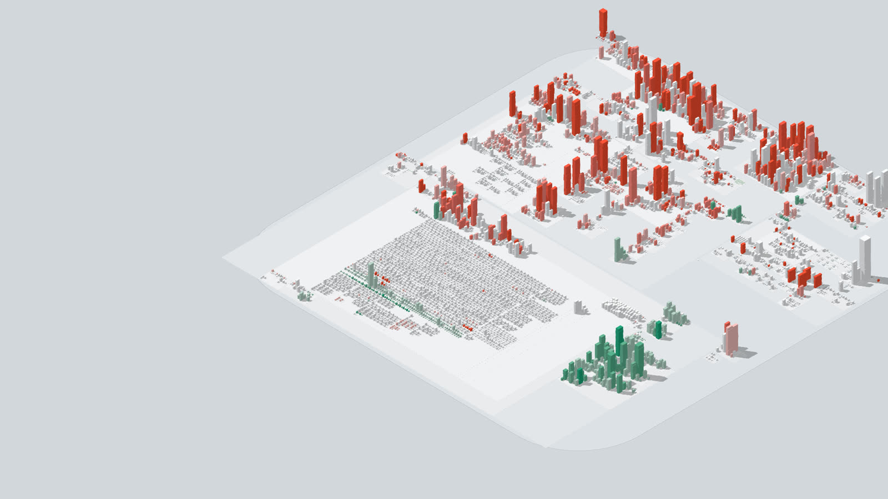

Explore one

How to read it
- A building
- is one file. Hover for its name, click for its details and its imports.
- Its size
- is the file's length. Long files are wide and tall. Or switch height to how many files import it.
- A district
- is a folder. Folders inside folders are raised plots inside plots.
- Its colour
- is whatever you ask: what changed, age, churn, file type or author.
What it shows
What changed, and what was left alone
The map opens coloured by how recently each file was touched, on a scale taken from the project's own history. It reads the same on a repository a week old and one ten years old.
- Changed lately
- New files
- Uncommitted work
- Long left alone

What your last pull brought in
After a git pull, one click shows exactly the files it changed. This comes from git's own record of where you were before the pull, so it is right even when the commits were written days ago.
The same goes for your own absence: the map remembers when you last looked and shows what moved since.

What depends on what
Click a building to draw its imports and the files that import it. Switch height to imported by and the small files everything leans on become towers.
- TypeScript
- JavaScript
- Python
- Go
- Rust
- Java
- Kotlin
- C and C++

How it got here
Play the timeline and the city is built again from the first commit: districts appear with their first file, buildings rise as files grow, and each change flashes as it lands. Save video records the playback as a file you can post.

Live, while you and your agents work
Leave it open on a second screen. A saved file lights up within a second, and a new file rises from the ground where it belongs. When several coding agents are editing at once, you can see where they are.
Three themes: light, dark, and a beach for Fridays. A building's colour means the same in each.


Start
# in any git repository: opens the live map npx codecity # another folder, or a different port npx codecity ../some-repo --port 4000 # one self-contained HTML file, to keep or to share npx codecity -o map.html
Local by design
codecity reads your working tree and your git history on your own machine. The page it builds contains everything it needs and makes no network requests. There is no account and nothing to configure.
The single-file output works offline. Attach it to a pull request or send it to a colleague.